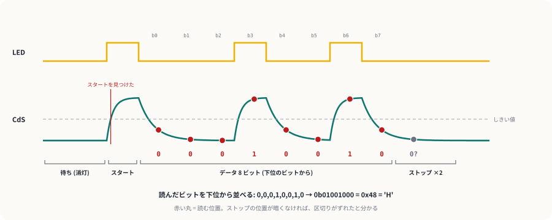
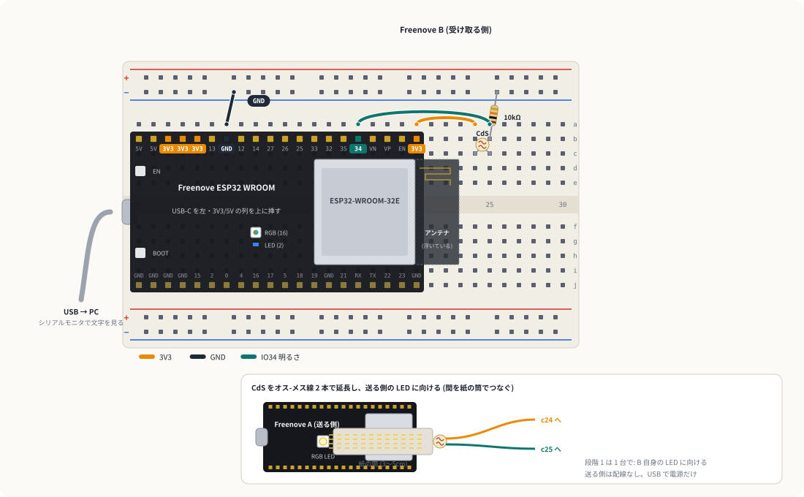

光で文字を送る
可視光通信のページで画面の中でやったことを、実物でやります。Freenove の ESP32 を 2 台使い、1 台が基板のフルカラー LED の点滅で文字を送り、もう 1 台が CdS で光を読んで文字に戻します。CdS は反応が遅いので 1 秒に 1 文字くらいですが、そのぶん点滅が目で追える通信です。
1しくみ
点灯 = 1、消灯 = 0 (OOK)
光を点けたら 1、消したら 0。いちばん単純な変調 (OOK) です。ただし 0 が続くと「何も送っていない」のと区別がつかないので、1 文字ごとにスタートビット (点灯) で始まりを知らせ、ストップビット (消灯) で終わりを確かめます。1 文字は スタート 1 + データ 8 + ストップ 2 = 11 ビットです。

CdS は遅れて、なまる
CdS は光が変わってから抵抗が落ち着くまでに数十 ms かかり、暗くなるときの方がさらに遅いのがふつうです。そこで受け取る側は、スタートビットで明るくなった時刻を基準に、各ビットのまん中 (1.5 ビット後、2.5 ビット後…) で明るさを読みます。端で読むと、1 つ前のビットの「なまり」を拾ってしまいます。
明るい・暗いの境目は自動で決める
部屋の明るさや LED との距離で、CdS の電圧は変わります。受け取る側は直近 3 秒間のいちばん明るい値と暗い値のまん中を境目 (しきい値) にします。送る側は 1 行の頭に、画面には出さない 1 文字 (0x01) を付けて、境目合わせの材料にしています。
2配線
受け取る側 (Freenove B) だけ配線します。首振りガジェットの CdS と同じ分圧の形です。CdS はオス-メス線で延長し、送る側の LED に 1cm くらいまで近づけて向け、紙の筒でつなぎます。

| # | どこから | どこへ | 役割 |
|---|---|---|---|
| 1 | a7 (GND) | 上の − ライン | GND を配る |
| 2 | a20 (3V3) | a24 | CdS の上側に 3.3V |
| 3 | CdS セル (オス-メス線 2 本で延長) | c24 と c25 | 向きはない |
| 4 | 10kΩ | b25 と 上の − ライン | 分圧の下側 |
| 5 | a16 (IO34) | a25 | 明るさを読む |
3段階 1: 1 台で、光の遅れを見る
まず受け取る側 (B) だけで試します。CdS を B 自身のフルカラー LED に向け、紙の筒をかぶせます。LED が 0.1 秒ごとに点いたり消えたりし、CdS の電圧がどう遅れるかが見えます。
- 書き込んでシリアルプロッタ (115200 baud) を開く。
ledの四角い波に対して、mVが遅れて丸くなった波になる。 PLOTをfalseにして書き込み、シリアルモニタを開く。「点いてから ○ ms / 消えてから ○ ms で半分まで変化」と出る。- 2 つのうち長い方の 3 倍くらいが、1 ビットの長さ
BIT_MSの目安。100ms より長ければ、段階 2 のBIT_MSをその値にする。
- 明るいときと暗いときの電圧の差が 250mV 以上ある (小さければ CdS を LED に近づけ、筒で囲う)
- 「消えてから」の方が「点いてから」より長いことが多い
4段階 2: 2 台で文字を送る
送る側 (A) には配線はありません。light_tx を A に、light_rx を B に書き込みます。BIT_MS は両方同じ値にします。
- B の CdS を、紙の筒ごと A のフルカラー LED にかぶせる。
- B のシリアルモニタを開く。A は
HELLO ESP32を送り、終わると 5 秒休んでまた送る。1 文字 約 1.1 秒なので、頭の印と改行を入れた 13 文字で 1 行に約 14 秒かかる。 - A も PC につないで別のウィンドウでシリアルモニタを開き、文字を打って Enter を押すと、その行が送られる (シリアルモニタの改行の設定は「改行なし」以外にする)。
- B に
HELLO ESP32が出る。A の LED が点滅している間、1 文字ずつ増えていく - 日本語も送れる (UTF-8 で 1 文字 3 バイトなので、3 倍時間がかかる)
- 途中で筒をずらすと、その文字が化けたり
?になったりする (?はストップビットが暗くなかった印)
「ファイル → 新規スケッチ」で 2 つ目のウィンドウを開き、そちらで A のポートを選んでシリアルモニタを開きます。ウィンドウごとに別のポートを見られます。
5段階 3: どこまで速くできるか
A と B の両方で TEST_MODE を true にすると、A は 0123456789 を休みなく送り続け、B は 1 行ごとに誤った文字の数と、これまでの誤りの割合を出します。BIT_MS を両方とも同じだけ小さくしながら、どこで化け始めるかを調べます。
| BIT_MS | ビット/秒 | 1 文字 (11 ビット) | 誤りの割合 (記入用) |
|---|---|---|---|
| 150 | 約 6.7 | 1.65 秒 | |
| 100 | 10 | 1.1 秒 | |
| 70 | 約 14 | 0.77 秒 | |
| 50 | 20 | 0.55 秒 | |
| 35 | 約 29 | 0.39 秒 |
限界を決めているのは ESP32 ではなく CdS の遅さです。段階 1 で測った時間に近づくと、1 つ前のビットの光が残って、0 を 1 と読み違えるようになります。光の変化に速く反応する受光素子 (フォトトランジスタやフォトダイオード) に替えると、同じ仕組みで何百倍も速くできます。
6うまくいかないとき
| 症状 | 見るところ |
|---|---|
| B に何も出ない | A の LED が点滅しているか。CdS が LED を向いているか。両方の BIT_MS が同じか |
| 文字が全部化ける | 段階 1 で明るい・暗いの差を見る。差が小さければ近づける・筒で囲う。BIT_MS を大きくする |
| 最初の 1〜2 文字だけ化ける | しきい値を合わせている途中。頭の 0x01 で合わせているが、離れていると足りないことがある |
| 部屋の照明を点けたら化けた | 照明のちらつきを拾っている。筒で囲う |
7改造のアイデア
- 両方向に話す: CdS をもう 1 組 (手元に 2 個ある) A 側にも付け、交互に送る半二重のチャットにする。
- LED を替える: 基板の LED の代わりに、5mm の緑や青の LED と 1kΩ を A のブレッドボードに付ける。色で CdS の反応が変わるかを比べる。
- 誤りを見つける: 1 行の最後に、文字コードを全部足した値 (チェックサム) を付けて、B で合わなければ「もう一度送って」と返す。